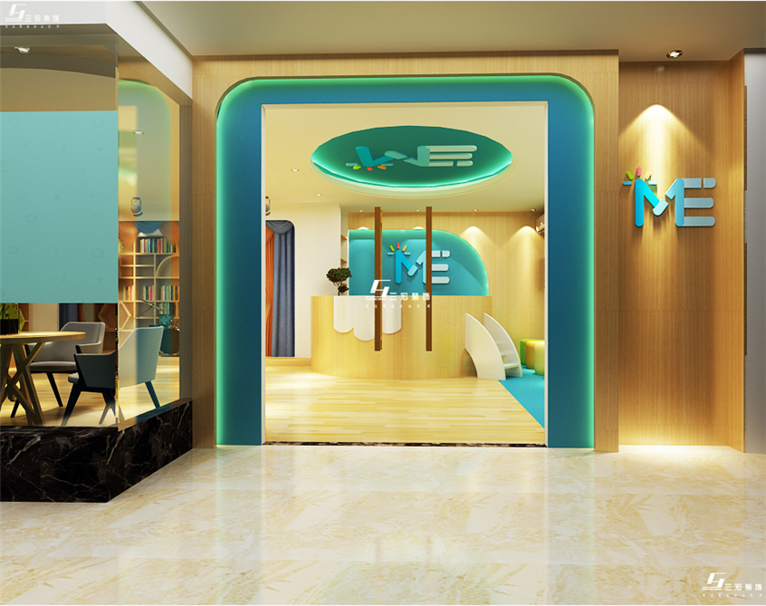

ye Education Chain, founded in 2001, is a private education institution and educational entity specializing in the development of children's brain potential and artistic cultivation. The institution emphasizes "centering on the ideal development of children" and "comprehensive education with full participation, whole process and facing all", and aims to achieve the "ideal development of group children", which is also the concentrated embodiment of the educational achievements of president XX in the past ten years. Since the successful establishment of the first XX kindergarten in 2001, AFTER ten years of rolling development, XX education has developed to have eight XX direct parks, direct parks throughout the five districts of XX. There are nearly 300 faculty members and nearly 2,000 enrolled students. On the basis of the fruitful achievements of running the garden for many years, the whole process transcends the traditional teaching mode at the historic moment, which is the continuation and crystallization of XX's continued reform.

1.Our organization is authorized by the authority, the qualifications of running a school appear very complete, have been put on record in the local. This itself is a guarantee for students, if there are various problems in the later period, you can directly communicate with the relevant staff, quickly feedback problems, solve problems. If it is not fully qualified institutions, after problems are likely to prevaricate, or even run away. 2.Our curriculum is divided into online and offline, it's convenient students can be very flexible to arrange study time of the individual, if more willing to participate in offline courses, can be directly to the agency to go to the lecture, if want to see in network online classes, can be directly login account to complete the study course. This greatly facilitates the needs of different groups of people, because some people are very short of time, and some people have strong learning ability, so it is easier to choose appropriate courses.